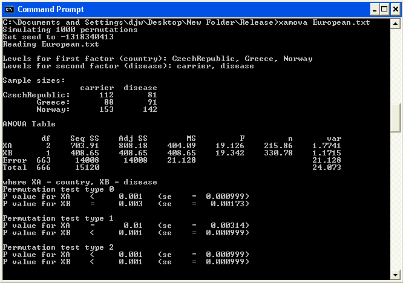

xAMOVA
xAMOVA is a program that extends the AMOVA (analysis of molecular variance, Excoffier et al 1992) to crossed designs where there are two factors (i.e. a two-way AMOVA). Components of variance are estimated for each factor, and simulation-based significance tests are performed for each factor individually and the model as a whole.
To download xAMOVA click here. The zip file contains
- Windows XP Executable
- Mac OS X Executable
- Source code
- Example dataset
Information on how to format your data for use with xAMOVA, running the program, and example analyses are contained in the file README.txt. A publication for the methodology in xAMOVA is being prepared with collaborators in France and Japan. In the meantime there are details in Chapter 3 of my thesis. The original AMOVA reference is
Excoffier, L., P. E. Smouse and J. M. Quattro (1992)
Analysis of molecular variance inferred from metric distances among DNA haplotypes: application to human mitochondrial DNA restriction data.
Genetics 131: 479-491. (pdf)
Example screen shot:
